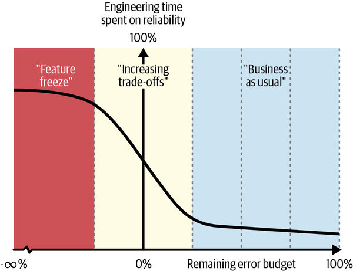

The first edition of Site Reliability Engineering did much to popularize the SLO framework and kick-start its adoption across the wider computer industry. Others promptly took the baton and ran with it, producing a wide array of introductory, intermediate, and advanced material in almost every form imaginable. This reflects the continuing need for effective models at all levels of experience to help people understand the behavior of the systems they’re responsible for, the level of service they should provide to users, how much effort is justified to achieve it, and what to do when those expectations aren’t met. As we were writing this edition, SLOs remained the most frequently queried topic in the online version of the first edition.
The challenge for this chapter is that the market for introductions is already well served, but much of the more advanced material does not make sense without a basic understanding of SLO concepts. Therefore, we’ll start with a brief overview before turning our attention to the following topics, which were either not covered or only briefly addressed the first time around:
Pitfalls in SLO adoption
Critical user journeys
Subordinate SLOs
SLOs for B2B businesses (and per-customer SLOs)
Implicit SLOs
Client-side SLOs
SLO tooling
Detecting (and prioritizing) violations across a large field of SLOs
Weaknesses of the SLO model and some suggestions for how to deal with them
Readers familiar with SLOs might want to skip the following section, but thanks to this expanded focus, we’re confident that just about every reader will find something here to assist them in their SLO journey.
SLO is, of course, an acronym for service level objective, but the term is also used to refer to a broader framework for understanding system behavior and determining how to respond to it.1 It has both technical and organizational components. The widespread popularity of SLOs is partly due to the simplicity of the base underlying technical model, though as we’ll see, there is a large amount of nuance and variation. That said, in many cases the organizational components are just as important, if not more so.
Let’s start with a few definitions:
A typically numerical measurement of some aspect of system behavior.
A common example is http_responses_total_count. Every time the system
responds to a web request, that metric gets incremented. These days, most
common pieces of (for example) server software running in a cloud
environment come by default with some low-level metrics, but it’s
absolutely possible to synthesize them if you need some that are
missing.
A quantifiable measure of service performance.
SLIs combine metrics into a
higher-level construct that tells you how a service is performing. The art of creating good SLIs lies in choosing the right metrics and transforming them in a way that accurately
represents the users’ experience of a service. In general, we
recommend expressing them as the ratio of two numbers: the number of
good events divided by the count of total events. Continuing with the previous example, if we were to calculate http_responses_200_count /
http_responses_total_count, we would have an SLI. We’d probably name it
something like http_success_ratio or http_availability, but naming is often highly domain-specific.
A target for an SLI.
An SLO combines one or more SLIs with a target. If you express your SLIs as previously recommended—a ratio—your SLO targets will generally be somewhere just short of 100%, for example 99.9%, or “three nines.” Numbers ending in 9 or 5 are very common in this context. SLOs invariably have a time or measurement window associated with them, so you might have an SLO of 99.9% per hour, day, 30 days, 90 days, and so on. (We note that lifetime SLOs are not practical, but we have seen year-long SLOs.)
An agreement for what happens when the target isn’t met.
Targets, by nature, are not always met. An SLA is an agreement between the provider of a service and a consumer of that service, specifying what happens when an SLO violation occurs. (In general, this takes the form of a financial penalty for the service provider, in favor of the service consumer.)
The allowable limit of service unreliability.
An error budget is the gap between perfect (100%) reliability and your service’s SLO target. It represents the maximum amount of unreliability or errors a service may accumulate over a measurement window before triggering a shift in engineering focus to address the breach of the internal target. For example, if your availability SLO is 99.9% over a 30-day window, your error budget permits up to 0.1% of failed requests, or 43.2 minutes of downtime, during that period.
How quickly a service consumes its error budget.
A burn rate of 1 means the budget will last exactly as long as you expect it to (the week, or month, or whatever measurement window over which it’s defined), while a higher burn rate means you’ll run out faster than you expect. Using the burn rate for SLO alerting makes it possible to move away from noisy, arbitrary thresholds and instead alert on the true severity of an incident.2
A series of steps a user takes with a service to accomplish some task that’s important to them.
Distinct from single service SLIs or SLOs, CUJs generally involve multiple underlying calls to different services and/or computations, even though it looks like just one thing to the user (for example, logging in). Measuring service performance on CUJs is usually a better way to understand how users are actually experiencing that service.
All of this might make it seem as though SLOs are an overwhelmingly technical, or even technocratic, exercise. Actually, one of the best things about SLOs is the organizational component. SLOs are a way for the business side and the technical side to talk to each other about the service they’re offering, how it works, and, crucially, what customers should experience from that service. An equally important component is agreeing on what should be done to ensure that experience actually happens. (See Chapter 7 for more on this.)
In addition, it’s important for everyone to understand why the target is not 100% and what trade-offs are involved in tightening or loosening it (more on this later in the chapter). There are many ways that this can be achieved, but the key point, somewhat paradoxically, is that it is not engineering that decides. Instead, a cross-functional group including representatives from business, product, engineering, and operations should come together to discuss it, with the group as a whole, or the business in general, making the decision. This is because SLOs are closely tied to the customer experience—and often informed by CUJs—and therefore have direct business implications. As a result, the business must understand those implications and be prepared to act on them.
Unsurprisingly, there’s a lot of variation in this part of the process. SLO-related decisions can be expressed in many ways: for example, the meeting could conclude with an agreement on “three nines for everything except cart checkout, which is four nines,” or “login and repository checkout is 99.95%, repo apply is 99.5%, and per-byte per-customer data is retrievable at 11 nines a year.” (Note that these 11 nines are not an availability SLO but a durability one!) Not all metrics or SLIs required for SLOs have to be fully implemented, or even exist yet, when these decisions are made. Usually there’s quite a bit of work to do at the start (especially for greenfield implementations). Generally, SLO adoption is a sustained and continual process, benefiting both from tuning the underlying implementation—metrics, SLI choices, etc.—and from regular feedback. We find it typically takes fewer than five high-level SLOs to adequately represent users’ reliability expectations for most services. This number remains practical for business use while still providing meaningful signals to the engineering team to constrain design choices and guide operations.3
Most of what we just covered is about SLOs that are offered to users—i.e., externally facing. Internal SLOs are also hugely relevant to running good services, but two aspects are different. First, the SLOs are usually defined on smaller components of the customer journey. For example, a login/security service might have an SLO with an internal storage service for access to password data. Second, financial penalties are not typically offered internally because generally there’s not much point to reallocating funds between divisions of the same company. That doesn’t mean there can’t be consequences of some kind, of course. A common approach is providing a way for the violated party to make sure the violating party puts engineering effort toward fixing the problem. This often occurs at the expense of regular development work.
A key part of defining SLOs is how you select the SLIs and set the thresholds. We can’t treat this topic in the depth it deserves in the space available here, but we can give a few useful starting points.
We provide two sets of recommendations. The first offers foundational guidance on SLI selection to orient you in the wider space. The second presents more concrete implementations, which may be challenging for beginners to apply without understanding the supporting context. We include both so readers can navigate the material according to their experience level.
To begin, a one-sentence summary of the initial approach to SLI selection might be something like “Pick the services associated with the most common or important things the user is trying to do, and choose SLIs based on the happy path of how those services work.” For example, let’s say the SLO is “users should be able to log in 99.9% of the time.” The simplest possible approach would be to find the entry point of the login service at your load balancer or frontend and check the overall return code. You’ll miss some detail about precisely what is causing failures, but it’s still a huge improvement over having no SLI at all. A more complex approach, which is beyond the scope of this discussion, would be to define SLIs for all the remote procedure calls or function calls involved in a successful login request (e.g., authentication, user state, and caching services) and then define the login SLO in terms of those SLIs.
In addition to picking a set of metrics, you also have to pick some thresholds. We’ll consider two kinds here. The first is an availability threshold, which defines how consistently a given behavior must be delivered. The second is a goodness threshold, which defines what constitutes acceptable behavior, such as the desirable service latency.
Availability thresholds are typically expressed in nines (e.g., 99.9%). Briefly stated, the meaningful choice here is often understood to be what side of 99.9% you want to be on: 99% is relaxed, and 99.99% is demanding. Most people end up around 99.9% (and a smaller proportion at 99.95%). If you are looking for a number to select thoughtlessly, 99.9% is not a terrible choice to start with, though we are unable to recommend thoughtless selection in general.
A key activity of threshold selection involves goodness thresholds, and in particular latency. It turns out that how slow a service is affects both how much and how happily people use it. A great reference here is WPOstats.com, which lists a large number of studies looking at web performance and user behavior. Frontend engineers are extremely aware of this kind of thing, but sadly they are not often the people actually constructing SLOs.
We recommend starting with a latency SLI (with, of course, a corresponding latency SLO) for your service(s), since neither monitoring nor acting on latency problems does your users a disservice. If you’re just getting started, two useful reference points are that 100 ms feels instantaneous to most people, while anything above 1,000 ms tends to feel quite slow and clunky. It’s possible to get way more precise about abandonment rates, but if you have literally nothing, these are not terrible places to start. One nuance that bears mentioning here is how these SLOs are constructed. A latency SLO is defined by the percentage of requests that meet the latency threshold—e.g., 99% of requests completing in less than 100 ms—not by the latency threshold itself. In other words, you follow the standard SLO pattern of dividing requests into “good” and “total” buckets and then measuring the proportion of good requests.
Another generic approach—though it has significant downsides and is really meant to be used only when you’re experimenting—is to look at the performance of the existing system and codify that into SLOs. The advantage of this is that you know your existing practices are sufficient to deliver this level of performance, because they have been. However, this is an advantage for your organization, not for your users. There are many disadvantages, chief among them that you can rationalize yourself into believing existing service levels are okay simply because they happen to reflect today’s performance. This also means you avoid having the discussion about what the levels should actually be, which is the major organizational benefit of approaching the SLO question in the first place.
If you’re already familiar with the basics of SLI selection, Table 8-1 provides some suggestions of SLI types and measurement approaches that are often appropriate for different system types.
| User interaction style | Suggested SLI types | Suggested measurement approaches |
|---|---|---|
Request/response |
Availability |
% of valid requests served successfully. |
Batch/data processing |
Coverage |
% of valid inputs processed successfully. |
Storage |
Throughput |
% of time read or write rates are above a threshold. |
Choosing from this simple “menu” can make it easier to decide which aspects of a user interaction to measure. Of course, we haven’t covered the full range of user interaction styles here, but some combination of the approaches in this table is probably a useful place to start. For example, a source code control system exercises aspects of all of them: low-latency interactivity is important for some interactions, freshness of repository data is critical, and storage underpins almost everything. However, it also has requirements for storage durability and commit persistence that, say, an ecommerce checkout system does not.
Why don’t people just pick 100% as the SLO target? Much has been written on this, but the short answer is the cost gradient—more reliability costs more, financially and temporally. Getting to 100% is very, very costly, and in practice you can’t achieve it anyway due to sources of marginal loss that are almost undetectable in normal operation but impossible to eliminate in principle (for example, cosmic rays). Given that 100% availability cannot be guaranteed regardless of what you do, you inevitably have to choose a spot in the trade-off space.
If not 100%, though, then what? The core of the self-reinforcing feedback loop that drives improvements in service reliability is the error budget. If being more reliable than the target provides only marginal increases in user satisfaction, then being comfortably above it permits the service to take more risks, such as deploying faster or performing A/B tests on small fractions of live traffic. Conversely, being well short of the goal is an indication that too much risk has been taken, and that a time of stability may be required to restore users’ trust in the service.
In an idealized world, then, an SLO represents the dividing line between two binary states: business as usual/developing new features when there is error budget to spare, and improving service reliability when there isn’t. Most real engineering organizations will instead vary the engineering effort dedicated to reliability work at specific points on a spectrum between these two extremes, as business priorities dictate. This scenario might look something like Figure 8-1, where:
A baseline effort of, say, 10–15%, is spent on reliability (e.g., pager rotation, weekly bug triage, etc.).
When the remaining error budget drops below ~25%, the amount of engineering effort dedicated to maintaining service reliability quickly ramps up, reaching around 50% by the time the error budget is depleted.
The effort plateaus at ~90% when the service is deep in the red.
Please note that this scenario is an illustrative example, not a recommendation!

One mechanism that neatly encapsulates this trade-off between feature work and reliability work is to tie evaluation of a service’s remaining error budget directly to the development cycle, a practice we’ve observed works well for many of our cloud customers. Consider Agile development’s idea of two-week sprints as an example: a quick glance during the retrospective at the service’s SLO performance can provide insight into how much work on reliability should be scheduled in the next sprint. The value of such an approach is that it aligns all parts of the organization around a common goal: providing a service that is reliable enough to meet the agreed-upon objective.
We’ve written elsewhere about the importance of support when implementing SLOs. Any project that brings together all the key verticals in a business and entails making serious decisions about resource allocation shouldn’t be taken lightly. If internal support wavers, getting to the final destination can be delayed or even deferred indefinitely. This is true during both the planning and implementation phases.
The key question to answer during the planning phase is why. Since most complex projects fall apart if they don’t have a clearly articulable purpose, it’s best if an SLO implementation project is tied to business objectives. For some sectors—finance, healthcare, retail—reliability improvements have an obvious positive effect, often felt on a day-by-day basis if not a second-by-second one. Companies in highly regulated industries often like having formal programs with targets, measurements, and so on that they can attach to organizational priorities everyone knows about. Sometimes you might even be in a position where a recent outage, or spate of outages, makes it easy to get the project going. “Never waste a good crisis,” as they say. Be warned, however: if the problems quiet down, so too, can the organizational momentum behind them. Another potential stumbling block is when an SLO adoption program is a firm organizational priority for every team, with milestones defined years out, but the rollout stalls on a particularly critical team or system where the effort is seen as a failure. Once SLOs become associated with a failed implementation on a critical team—perhaps due to a hastier or more haphazard rollout than usual—they can quickly acquire a reputation for failure. That association may be unfair, but it often persists regardless.
Of course, these risks exist alongside other common organizational pitfalls, such as being overly failure-shy and hence not making progress. Our recommendation for all these situations is the same: take an iterative approach, capture and communicate your successes, and spread credit relentlessly. This may be hard within your current culture, but we believe these actions are at the root of success. Fear of failure and reluctance to address entrenched attitudes can be addressed through an emergent culture of innovation, championed by leaders and driven by practitioners. Sometimes the easiest thing to do is speak about this explicitly as a leader, giving your people clear permission to try something new.
Even if teams embrace SLO adoption, the early challenges of SLI selection, target setting, or even simply identifying “good” and “bad” events may slow down the effort. This difficulty can prolong the initial dip in productivity (referred to as the J-curve) and hinder progress if not addressed quickly. Fortunately, based on our experience, we can offer a few suggestions for avoiding common pitfalls in SLO adoption within larger organizations.
The first of these is that the program manager should have an explicit goal of making it easier for teams to start taking the key steps involved in implementing SLOs. This includes deciding what matters for the business in this particular system, looking at existing metrics, selecting SLIs, and measuring reliability. As with many things, the software aspect is often the easiest part; in many organizations, the software needed for SLO monitoring, alerting, and reporting (whether homegrown, custom, or commercial) is already available or easy to get hold of. If you’re doing any monitoring at all, you almost certainly already have much of this in place. Generally speaking, it’s the non-software aspects that are more difficult. Producing reusable templates, providing clearly written and widely accessible guidance, and making practitioners available to assist teams is always useful and will reduce confusion during implementation (see Chapter 4).
A key component of this is engineering support from SREs, where possible. Direct SRE support for teams facing challenges, or for business-critical services, can make it easier to adopt production SLOs. Mandates without enough resources to implement them are generally seen as burdens. SLO requirements that come with engineering assistance are far more welcome and generally more successful.
Another pitfall can be the complexity around inter-service dependencies and extended hierarchies. These can make drafting the initial SLIs/SLOs seem intractable. One approach to make the task more manageable is the “eat from both ends” strategy: start with SLOs focused on the end user and SLOs for the most commonly used core system components. Teams typically feel more comfortable adopting SLOs within their own domains, so you start with the narrower scope and work toward the middle, negotiating boundaries and targets along the way.
Sometimes, there’s a “chicken and egg” effect. This happens when teams lack the telemetry for the SLO effort, and in order to produce that telemetry they need to understand what services they need to observe. Frameworks like RED, which assesses the performance of user-facing services by observing Request rate, Error rate, and Duration, and USE, which monitors the health of underlying hardware resources by observing their Utilization, Saturation, and Errors, can give you a place to start. However, we recommend cheerfully discarding these if and when product teams identify better metrics based on a deeper understanding of user reliability needs.
Finally, on implementation: like most things, iteration time on SLI/SLO design typically reduces significantly after you’ve done it a few times, and once the organizational muscle for rapid observability development is trained, it tends to get used continually and be a benefit to more or less everybody.
In the next sections, we’ll explore some more advanced SLO topics.
CUJs extend the concept of SLOs in the user experience domain by helping define the workflows that matter most to end users. The basic idea is that when a user interacts with a product, they are effectively making “journeys” to do the things they want to do with the software. Login, checkout, and search are examples in an ecommerce context. Some of these journeys are more important than others (hence “critical”), but the key thing is that they must be defined from the user’s point of view.
One way the SLO process can go wrong is if it’s driven completely or almost completely by SREs with primary responsibility for backend systems, which is a very common situation for SREs. As a result, the SLOs chosen will reflect primarily backend concerns, leading to a strong focus on, say, storage latency for subsystem X, end-to-end ingestion time for the recommendation pipeline, and so on. This is fine so far as it goes, but it’s a siloed, not a holistic, approach, and it misses a crucial aspect of truly being user-focused: that it’s always a cross-cutting effort involving multiple systems. To provide meaningful SLOs that work reliably and enable the business to succeed, the frontend, backend, and every intermediate layer must be considered together. The absence of frontend SLOs is a characteristic flaw of an SLO process driven exclusively by SREs.
An SLO for a CUJ is defined in terms of the overall success and
performance of that journey. For example, you might define an “Add to
cart” availability SLO of 99.9%, as measured by tracing successful
requests through the frontend. This user-centric approach provides a
much more accurate measure of reliability as experienced by the user and
helps to focus engineering efforts on what matters most. Another key
practice is supplementing the usual backend traffic measurement with
client-side SLIs and associated instrumentation (see “Client-Side SLOs”)
and using synthetic monitoring (i.e., “fake”
requests) to exercise the entire CUJ. The latter is particularly
important: if your fake request only does the equivalent of a GET /, you
are testing only a subset of the things that matter in the CUJ. You need
to fully test the entire code path.
Traditionally, SLO best practices have advised against highly granular, per-customer monitoring, particularly in business-to-consumer (B2C) environments where you might have millions or even billions of users. There have been two reasons for this: first, one of the original motivations for SLOs is the ability to discard information you decide is unimportant, so as to preserve your organization’s attention and the user experience; second, the sheer volume of users has often made it impractical to monitor each customer’s individual experience. Given that, product-wide CUJ-based SLOs, combined with service-wide metrics and alerts, have usually been regarded as sufficient.
While SLOs have proved useful across multiple domains, their expanding application has highlighted a new challenge: the need to define nuanced metrics that treat subsets of a measured population differently. This is most sharply relevant when the importance of customers adheres to a Pareto distribution. In this model, a small percentage of customers can account for a significant portion of revenue, or pose substantial reputational risk. For instance, in enterprise contexts a single customer might represent a double-digit percentage of your company’s revenue. When such critical relationships exist, continuing to treat all customers identically becomes an untenable luxury—failures for these customers might not trigger a broad, product-wide SLO alert but still cause them pain and hurt their business.
As a result, organizations have a choice to make: either support their most valuable customers, accepting the increased cost, overhead, and complexity, or rely on existing mechanisms and accept their limitations.4 In our opinion, this evolution of monitoring strategies is a journey that B2B providers should consider, and it’s one that Google Cloud has already embarked upon. Our experience indicates that operationalizing per-customer SLOs for even a small percentage of your most critical customers can be worth it, but it requires ongoing maintenance and regular reevaluation of whether the high operational cost is worth the results.
Definitionally, per-customer SLOs are the same as ordinary SLOs; it’s just that you maintain (and vary) them on a per-customer basis. In some cases, you can implement this using tags with the customer name on the same underlying metric. In others, you may need separately named metrics or even entirely different metric groups that exist only for a given customer—though of course that creates some scaling difficulties as the number of customers grows.
Per-customer SLOs, and their associated monitoring, yield many benefits. One particularly useful one is proactive incident detection. Prior to per-customer SLOs, if a customer didn’t detect their own issue, the business- or service-wide SLOs almost certainly wouldn’t either (because SLOs, by design, discard failure information not reaching a certain threshold). But with per-customer SLOs, a service provider can sometimes be in the happy position of being able to alert a customer to a problem before they notice it. At Google Cloud, this proactive approach, primarily utilizing customer-centric alerting, has led to numerous instances of early incident detection and mitigation, often before customers formally reported the issue. (Never forget the huge value of communicating early and often with your customers!) Consider that aggregating signals makes it impossible to distinguish if an average error budget burn rate of 10 comes from a single customer with a burn rate of 10; or one customer at 100 and nine customers at 0; or 20 customers all experiencing a burn rate of 10. This limitation means that even severe “practical outages” for a top customer could go unnoticed in broader service-wide metrics.
Additionally, a (timely) per-customer alert enables faster communication and mitigation. Instead of starting from a general alert that overall performance has some problem, and having to investigate across a potentially much wider field of possibilities, a per-customer SLO violation gives you a much better place to start. At Google Cloud, before the customer notifies us, the alert has already made us aware of the workload being impacted, which helps us quickly narrow down the contributing factors. Immediate notification is sent to the relevant teams allowing for faster mobilization of support, SRE, or product development on-call teams. This facilitates improved, more tailored communication with the affected customer. Additionally, shared understanding of the problem space accelerates troubleshooting and resolution.
Finally, per-customer SLOs allow for additional care on workloads the customer has deemed critical. Instead of relying solely on aggregated service-wide metrics, which might mask single-customer outages, this approach targets the specific workloads and SLOs that matter most to individual top customers. This granularity enables teams to identify and respond to practical outages that disproportionately affect a high-value customer, even if the overall service appears to be operating within SLO for the broader user base.
Implementing granular, per-customer SLOs typically involves deliberate choices regarding coverage, thresholds, and alerting mechanisms, for both efficiency and manageable operational burdens.5 We provide a few best practices here.
Avoid measuring all SLIs for every customer. Instead:
Prioritize monitoring and alerting coverage for the customer’s critical workloads. Ideally, the customer tells you what is most important. This focus often requires maintaining a central repository of customer metadata (see “Operationalizing Per-Customer SLOs”) detailing the critical workloads and associated projects.
If you can’t get the customer to tell you what’s most important (or perhaps there isn’t a single answer internally), you may have to guess. Select existing SLIs that are deemed a good representation of the customer’s user experience for that workload, or at least that are not a bad proxy. Industry peers often have been there before you and may have useful ideas that can be recycled in your case.
While ideally the focus is on curated critical data, if you can’t get the data you need from the customer, you may just have to monitor their workload. Useful signals include what projects they spend time on, what has the most support tickets logged against it, and what gets the most traffic. See “Operationalizing Per-Customer SLOs” for more details.
For alerting noise to be manageable at all, we must define alerts that reflect when a customer’s workload is truly down, rather than just slightly degraded. There are a few ways to determine this:
Per-customer SLOs may require manually tuned thresholds, though of course this contributes to the maintenance burden. You can use generic thresholds to start with, but custom tuning is often necessary for high-value customers.
Burn rates are typically used for alerting. This can be done in the per-customer SLO case too, with the minor caveat that the customers need to be big or generate enough signal for statistically typical small variations not to create too much burn rate alerting noise.
Operationalizing per-customer SLOs requires careful management across several domains. First, a robust system for managing workload information is essential, typically involving a central repository of customer metadata, critical workloads, and resources for prioritization—you have to know what the customer is running in order to have a good-quality SLO for it. A generic model-based approach might be good enough if curated data is unavailable. Second, handling sensitive data correctly is critical, since per-customer monitoring can expose personally identifiable information (PII) and proprietary data. Monitoring systems must ensure compliance by using protections like anonymized identifiers. Third, maintaining alert fidelity is crucial since alerts quickly become stale or noisy due to individual customer workload changes; high-quality, actionable alerts are necessary to avoid toil. Fourth, tying per-customer SLOs to consequences differs from internal error budget policies. When a per-customer SLO is violated, the service provider should avoid interfering with the customer’s internal business decisions—the response should rely on negotiation and relationship management.
Additional challenges include data granularity, latency of metric availability, securing customer engagement, and ensuring organizational alignment with executive support. Long-term sustainability demands continuous investment in tooling and automation.
SLOs, as you know by now, have a dual nature: they are both organizational and technical. We’ve spent a lot of time talking about the technical aspects, but just as much as you use failure counts and worry about error budgets and exhaustion rates and so on, you are also using SLOs to signal to various audiences about your service.
Like most human communications, these signals can be confused or misunderstood. For example, teams may think that a demanding SLO means a service is important, and because their service is important (of course), it must have a demanding SLO.
However, there’s one kind of signaling and one kind of audience where the communication is actually very hard to misinterpret. That communication is the service level you’ve been offering already, and the audience is the existing users of the service.
Think of it from the point of view of your own experience with computers. When you use something—an API, a web service, or an app—you build in your mind an idea of how useful and reliable it is, and you modify your behavior accordingly. If it never fails, you probably use it every time you want something the service provides. If it’s powerful or generally applicable enough, you probably even use it over other services that aren’t as reliable.
The historical performance of your service is what we call the implicit SLO. People, over time, come to expect that what you’ve been doing previously will continue into the future. The danger is when you change your behavior and violate people’s expectations.
Let’s think about the simplest case. If you implement SLOs for something previously unblighted by measurement, and your implicit and explicit SLOs end up at the same level, no one gets upset because no one can tell the difference. Your users are receiving the same level of service as before; maybe the actual performance turns up in some org-wide report whereas it didn’t previously, but otherwise the universe is mostly unperturbed.
It’s when things change, in either direction, that life can get tricky.
Let’s consider another example, where you’ve been delivering two nines and all of a sudden it’s decided that you’ll now do five nines. That’s an inherently implausible change, but let’s say you accomplish it. Certainly, some users will be happier as a result—but strangely, you also stand a decent chance of annoying others. Why? Well, let’s say you have some service consumers who made the two nines work by building a set of infrastructure around the service so it worked for their use case—caching, fancy error handling, lots of retries, a close relationship with customer service, and so on. Thanks to the new performance level, all of that gets used about a thousand times less—but it’s roughly as costly to run and maintain, removing it would take effort, and implementing it in the first place was arguably a waste. This is even worse if the transition happens without communicating it’s happening in advance.
In essence, whenever the cost profile changes sharply in either direction, users may legitimately feel unfairly treated, and when it changes gradually, they may still feel left out. There is also a relationship with the Jevons paradox in economics here; it states, in essence, that if you make something more efficient to use, people will use more of it, and that usually consumes the resource buffer you thought you’d create by making it more efficient. In the SLO/online service world, if you make something significantly more reliable, your downstream users may well decide that your increased reliability means they’ll consume way more of your service than they were previously, which could have a destabilizing effect.
However, it’s the converse case that really annoys people: a significant relaxation of the observed performance. You were at five nines, you had to do some cost-cutting or reprioritization, and now you’re at (say) three nines. Even if you smoothly manage the transition—which is unlikely—if you fail 100× more often than you did previously, people are going to notice. They might feel they have to build additional infrastructure to make your new SLO levels tolerable, and that you’re effectively passing the consequences of your cost-saving efforts on to them. They’re right.
This idea of violated expectations is key to understanding the shock, and in some cases outrage, that accompanied the publication of the Chubby story in the first edition of this book. Chubby was a very important service and had a high SLO, which was generally exceeded. But SRE deliberately took actions to implement regular controlled outages in order to keep the reliability “at SLO” rather than exceeding it. As we’ve discussed, if you give people an implicit SLO of X, it doesn’t really matter if you say it’s not X; it’s behaving like it’s X, and that’s what they’ll remember. (It should be noted that the “at SLO” project was very successful in preventing barnacle-style accumulated and hidden dependencies that would have added reliability friction to production services as a whole.)
Another way to think of implicit SLOs relates to a former Googler, Hyrum Wright, and his eponymous law:
Hyrum’s law: With a sufficient number of users of an API, it does not matter what you promise in the contract: all observable behaviors of your system will be depended on by somebody.
We’d like to discuss a corollary from Alex Hidalgo, a noted SLO expert:
Hidalgo’s corollary to Hyrum’s law: It turns out that the reliability level is also an observable behavior of the system.
So, over time, people come to depend on your implicit SLO, and the more implicit you are about it, the worse it is when you have to change it. Be careful about this. The antidote to implicitness is explicitness. Overcommunicate, particularly during transitions, and pay regular attention to how actual performance and the SLO are being perceived, and you’re likely to get through without too much difficulty.6 But if your organization finds communication distasteful, implicit SLOs are likely to be serious booby traps for both you and your customers.
Another update to the classic SLO model is client-side SLOs. These are a class of SLOs that are defined on SLIs sourced from clients (also known as end user devices, or applications on those devices; for example, the Google Maps application on a user’s phone). These SLIs capture important health signals not visible to backend telemetry, such as application crashes, network connectivity drops, rendering issues, and broken user flows. For more information about how to develop these SLIs, see “Client-Side Telemetry” and “Customer-Centric Monitoring”.
Assuming you have the basics of client-side telemetry in place, turning that telemetry into accurate and actionable SLIs requires addressing the following additional challenges.
Large chains or cascades of asynchronous events, which are common in client-side programming, make it particularly difficult to reason about what’s going on. Given that the standard backend/server-side approach doesn’t easily translate to this context, a different approach is required.
One potential solution is to use an instrumentation model that requires explicitly instrumenting the start and end of interactions, enabling you to understand the percentage of those interactions that reach a definitive end state (success or failure). If application code fails to capture an error path, causing instrumentation to not terminate an active interaction, this omission would manifest as reduced interaction “completeness.” Establishing an explicit policy for instrumentation quality assures stakeholders that reported performance numbers are reliable and accurately represent the overall user experience.
A significant challenge when defining SLOs is the presence of a high noise floor—the baseline level of unavoidable errors or disruptions in a system. This noise level is particularly problematic in client-side metrics, where network failures and the inherent unreliability of older or lower-tier devices can drastically inflate observed error rates. While server-side operations can often achieve a near-zero error state, in practice this state is not observed on the client side. This fundamental divergence between client and server expectations profoundly impacts the concept of error budgets. For classical server-side SLOs, where the noise floor is minimal, most of the error budget is typically consumed during genuine outages. However, for client-side SLOs, a substantial portion of the error budget is allocated to these expected background errors, which are a constant presence. This discrepancy often necessitates very loose SLOs, expressed with fewer nines of reliability, thereby invalidating common assumptions about how these SLOs should be used (such as for setting alert thresholds). Very loose SLOs can create a situation where it is impossible to trigger a paging fast burn alert.
An additional concern is that the normal response to elevated client-side errors—pushing a new version—is usually managed by the client-side device software provider, and it can often take much longer than any period relevant to two-nines SLOs or above. (Sometimes, a server-side intervention can buy you some time for the client-side push to happen.)
One potential solution is to eliminate or account for the noise. In certain services, the noise floor can exhibit significant variability, often stemming from customer- or query-specific performance characteristics or other system attributes. This variability introduces mix effects, where observed performance shifts are frequently a consequence of changes in traffic composition. For strategies to manage such variations, see “Variation-Based Monitoring and Statistics”.
However, should the noise floor prove relatively stable, let’s say at around a 5% error rate, it becomes feasible to factor this noise into the SLO definition through the bad minute model. In this approach, service performance is assessed in one-minute intervals. The SLO owner establishes a threshold for what constitutes a “bad” minute—for example, more than a 6% error rate—and the SLO budget is then set as the permissible number of such bad minutes: let’s say 43 within a given 30-day reporting period. By positioning the bad minute threshold just above the observed noise floor, you can define tighter SLOs, which prove more effective at detecting acute performance changes that might otherwise be obscured by a simpler error budget. One example would be 99.9% of good minutes, versus the otherwise maximum possible <95% of successful requests.
Some client events, such as clicks or crashes, serve as strong indicators of service health. An increase in crashes or a decrease in clicks on popular features often signals service disruptions. While these metrics provide clear health signals, converting them into an SLI typically requires a relevant denominator, which can be hard to determine for client-side SLOs. Without one, the number of opportunities for failure are unclear, and you’re left with static thresholds—for example, fewer than X crashes per day—that demand constant adjustment as service usage fluctuates.
A solution used by many teams at Google is to address undefined
denominators by using a sessionization approach, defining the SLI as the
“percentage of sessions (i.e., users) who experienced an $event
during a $period.” This $event refers to any observable
client-side occurrence, such as app crashes, Application Not Responding
(ANR) errors, empty home pages, or error prompts. This SLI formulation
can be expanded to encompass complex combinations of events, leading to
product-wide SLIs like “percentage of sessions with a critical
failure.” This high-level metric
provides valuable abstraction by
concealing underlying product and technical complexities that would
otherwise be excluded or complicate the resulting metric. Teams adopting
this formulation should carefully ensure that the events within these
cohorts are of comparable severity to avoid confusing consumers of the
SLI or inviting equivocation when regressions are observed. If simply
measuring when the service is running and available to do useful work
doesn’t adequately capture the user’s reliability experience, this
approach is useful (but specialized).
The inherent complexity of client-side SLIs can naturally lead to confusion about precisely what is being monitored. This confusion, in turn, can erode trust in the SLI, ultimately limiting the utility of the corresponding SLO. For example, an SLI designed to measure feature rendering might not account for critical details such as whether the feature was visible “above the fold” (i.e., immediately visible without scrolling), or the relative importance of that feature compared to other elements on the page. While such factors are often crucial for a true understanding of user experience, incorporating them adds a lot of complexity to the metric definition. This increased complexity by itself can make the SLI harder to explain to stakeholders and create uncertainty about how much to trust the reported reliability numbers, as it becomes less clear what is actually being represented.
To avoid this, it’s essential to establish clear standards and guidelines for SLI definitions. This process involves defining common terminology, creating consistent methodologies for data collection and aggregation, and providing well-documented examples of effective SLIs. Standardizing metric definitions helps reduce ambiguity, ensures all stakeholders understand what’s being measured, and ultimately builds greater trust in reliability data.
Moreover, a standardized approach to SLI definitions can foster alignment among stakeholders regarding the interpretation of SLO performance results. Such standards should ensure that definitions include sufficient metadata to clarify the specific product functionality being measured, the methodology of measurement, and any pertinent caveats for consumers of these metrics. Effective implementation of this standardization will ensure that SLO violations prompt immediate discussions on resource allocation to resolve the issue, rather than necessitating further investigation to rejustify whether a problem exists.
Given the growing need to define and manage SLOs, every major cloud provider and practically every major application monitoring service prominently advocates for the use of SLOs. Dedicated services can even take monitoring data from these application monitors and layer SLO best practices on top of it. There is of course no single guaranteed approach to success, and SLO tool providers have offerings that are very different from each other. Despite conceptual overlap on core SLO ideas, the different observability providers also have their own time-series databases and query languages to query the time-series data that underlies SLO definitions. The main differences in SLOs often stem from the differences between the underlying storage and processing. There are many similarities, such as the consensus with regard to alerting on burn rate, but there are also subtle differences among providers. Experienced readers will not be surprised to hear that having a plethora of options causes some teams to create their own SLO management platforms rather than spending time assessing others.
While there may be no single best SLO tool, it is vitally important that you at least have an SLO tool. Centralizing and standardizing on tooling early in your journey will save considerable headaches later, as the work of integrating multiple disparate systems only gets more complex and costly as the quantity of data in them grows. Google’s internal tool, “SLO Repository,” is centrally funded software permitting self-service definition of SLIs and SLOs that can be based on metrics or logs analysis. It offers varying levels of ease-versus-complexity trade-off, from basic RPC service SLOs derived from a request/error metric pair to sophisticated user journey monitoring for complex consumer products like Gmail. As engineers change teams, teams are reorganized, or engineers collaborate on matters such as postmortem investigations, all participants can use a single common set of tools.
If every service team set up its own SLO solution, each would have its own set of features, bugs, and idiosyncrasies, greatly reducing the capacity for engineers to collaborate across service boundaries. Instead, aligned with the value of convergence (aka platform standardization) discussed elsewhere in this book (see Chapter 18), we recommend teams consolidate their choice of SLO tooling to avoid fragmentation and facilitate collaboration.
With all the considerations that come with defining a good SLO, it may seem daunting to have to figure out alerting rules for each SLO you define. In fact, it may be natural to wonder if an SLO intrinsically describes the appropriate alert rules. After all, an SLO already consists of an SLI and threshold, and The Site Reliability Workbook has a whole chapter (Chapter 5) discussing the intricacies of setting up robust alert policies.
Since the workbook’s publication, Google has converged around many practices in that chapter, such as the multiwindow, multiburn rate alert for SLOs. We’ve built a centralized alert configuration service that takes an SLO definition and deterministically creates a slow burn alert, which creates a ticket, and a fast burn alert, which pages the on-call. The definitions of slow burn rates and fast burn rates are roughly similar to those in the workbook: fast burn alerts fire when your SLO has burned through 2% of its error budget within an hour, and slow burn alerts fire when your SLO has burned through 10% of its error budget within a three-day window (and the overall SLO window is 30 days). The generated alert rule also contains many different windowed computations described in “Multiwindow, Multi-Burn-Rate Alerts” in Chapter 5 of The Site Reliability Workbook, which allows the alert signal to recover when the underlying service recovers. The combination of these techniques produces alert configurations with many dozens of conditions organized with various conjunctions and disjunctions.
The alerting techniques described in the workbook are generalizable enough to automatically, deterministically create alert rules for many SLOs at Google. If you are looking for a place to get started, we expect you could successfully apply some of those approaches in your own situation.
One large improvement to the published practices is better handling of low-traffic services, such as a service that handles fewer than 100 requests an hour (although this approach can still provide benefits for services somewhat above that traffic level).
Low-traffic services are a class of problems that the workbook previously identified, and the centralized alert configuration service at Google has a novel technique to handle this: using a binomial test to measure our confidence level that the service will fail to meet its SLO in low-traffic conditions. We can intuit that low traffic is equivalent to a small sample size, and the smaller the sample size, the harder it is to make strong conclusions about the data. Prior to the centralized alert configuration service, some manually configured alert rules worked from this intuition and approximated a binomial test by having different buckets of traffic levels with looser burn measurements for the buckets with less traffic. Version control history of these alert rule configurations reveals that these buckets changed over time, presumably to try to avoid false positives (noisy alerts) and false negatives (missing alerts) that the SLO owner encountered. A binomial test like the Wilson score interval (discussed in the following sidebar) makes this intuition more rigorous and is now standard practice for SLO alerts at Google, since the use of the centralized alert configuration service is also standard practice.
As the use of SLOs scaled at Google, so did Google’s need to organize all of its SLOs. Google has thousands of teams, each of which may have tens or hundreds of SLOs of varying importance. As a result, it’s hard to get a holistic view of production health, especially for leaders with many teams under their responsibility, or business units with many products and many leaders.
We addressed this by using labels. Labels are tags you add to SLO definitions indicating the organizational ownership for an SLO and its lifecycle. They’re a powerful building block for organizing SLOs. For example, a product area (such as Google Cloud) may have many products, a product (such as BigQuery) may have many feature areas, a feature area (such as Cloud Storage) may have many feature teams, and a feature team will have SLOs that the features and services it builds need to uphold (such as 99.9% availability in each region for requests making streaming writes). SLOs are labeled by their feature team, feature area, product, and product area, and this setup gives leaders a bird’s-eye view of the SLOs at their organizational level. This labeling has been useful to determine the criticality across organizations of certain failure types, such as a degradation of a common dependency, and to assess the impact of these shared root causes and the blast radius of different failures as measured by SLOs. It is a convenient way to treat a lot of data in the aggregate.
We have also found explicit tagging of SLO lifecycles to be useful. For example, SLO definitions can be experimental, aspirational, committed, or deprecated. Labeling SLOs as experimental helps inform stakeholders that the underlying SLI or chosen target is still being refined. A committed SLO communicates the level of service the team feels is achievable and defensible—a team’s error budget policy might apply only to committed SLOs. For levels of service that may be valuable to achieve but that teams are not yet ready to defend, teams can define additional aspirational SLOs to track the next set of performance and reliability milestones. While these aspirational SLOs are not suited for and should not drive alerting, they are critical for validating the feasibility and value of stricter SLOs. By sorting SLOs in terms of gaps, stakeholders can identify progress or regressions in service levels even if the service still complies with the committed SLOs.
One of the weaknesses of SLO availability reporting is that one number isn’t enough to capture detail that matters for high cardinalities.
Let’s consider an example. Once your user population goes above a certain threshold, perfect adherence to a three- or four-nines SLO doesn’t tell you anything meaningful about who or what specifically is being affected by outages. Trivially, once you have a large enough user population or underlying service volume, a potentially significant number of customers or queries can be affected by an outage, and this won’t trigger an SLO violation. Indeed, whether something is a “widespread” violation or not depends on the size of the user population, not on the SLO.
More importantly, one-number SLO reporting doesn’t allow for understanding the distribution of the failures. If some particular narrow subset of your user population is affected by an outage, perhaps even repeatedly, one-number SLO reporting doesn’t allow you to discover this. Of course, any particular cohort that is systematically punished is likely to exhibit much higher churn. (There is an argument that SLOs alone won’t help fix this, but for the purposes of this discussion we are going to presume you want to try to keep things in the SLO domain as much as possible.)
We previously discussed per-customer SLOs, which partially address this issue. Another possible approach is to have a way to measure the degree of concentration of the failures that can be displayed in a simple numerical format, alongside a standard one-number SLO compliance figure. This will allow the viewer to immediately understand how concentrated the failures are. Consider the example of standard deviation, a statistical metric designed to capture the degree of variance from a mean in a normally distributed population. Without retreading well-understood material in excessive detail, an example might help. The average height of men in Europe is 178 cm, with a standard deviation of 7 cm. This means that 68% of men’s heights range between 171 cm and 185 cm, with 95% falling within 164 cm and 192 cm. The ability to say precisely this flows from the specific properties of the normal distribution. In this example, if the standard deviation was much larger, you would expect to see much more variation in heights; conversely, if it was smaller, you would expect to see less. In some respects, it is therefore a measure of concentration.
Implementing this for online services rather than heights relies heavily on having labeled metrics—in other words, monitoring data in which each observation is tagged with one or more separately identifiable labels or attributes. This allows you to create cohorts or groupings in the data, permitting you to measure how concentrated the failures are across those cohorts.
Using a Prometheus-based example, let’s say we have a metric that has labels associated with it—browser-requested language, source IP address, hosted region, and so on. Naively, we could calculate concentration across such labels by looking at how evenly distributed across each label the data points are, but this will fail for low-cardinality data (for instance, if you support only one or two languages, or all your traffic appears to originate from a restricted set of load balancers). Instead, you need labels with high cardinality and ideally an underlying metric with (potentially) high variation—for example, latency. This allows you to detect concentration more effectively because you have a higher number of potential partitions to detect it in.
The clearest way to implement this is to use entropy loss. This is
illustrated in detail in the twinslo
repository, but we can use decision trees—specifically in this
example, the
DecisionTreeClassifier
method of the scikit-learn
module—to compare the distribution of the failures (technically, it
measures log loss, but the overall effect is the same). This can also be
used to stack-rank the various contributors to loss, as well as to
surface a specific one if there is one that stands out.
Another way to think of it is to assume we have a collection of data labeled
with categories, and the classifier takes new, unlabeled data and
tries to predict the category, while the regressor tries to predict the
value. As per classic ML/data science approaches, the training data is
partitioned into two sets: set A, where f1 ≥ x, and set B, where f1 > x.
The classifier selects the feature (f1) and threshold (x) that minimize either entropy or squared loss. Ultimately, no partition of your
dataset should have a large decrease in entropy—or, less precisely but
maybe more intuitively, no split should surprise you. If it does, that
means one of the features is acting very differently from the
others and is therefore appropriate for surfacing as the contributor to
outages. For example, if you have a DecisionTreeClassifier trained on
region, browser, and user_type, and one split gives you an 80% error
rate on (say) browser = 'Firefox', while another split with
user_type = 'Enterprise' and browser = 'Firefox' gives you a 95%
error rate for the cohort, then the model has uncovered a strong
interaction between those features.
Like any model, the SLO model discards complexity observed in the real world in order to make simpler something that is typically useful for some particular goal. In a notable parallel, SLOs themselves are rather radical in the extent to which they recommend discarding information to focus on what matters. The great thing is that most of the time, this works out, and over time, we’ve been able to come up with approaches for things that didn’t previously work well. However, sometimes the features of the world that your model discarded in the service of making something tractable turn out to matter.
In the case of SLOs, one core, explicit assumption underlies the model: the thing being measured can be counted (i.e., it consists of discrete events) and classified as either a success or a failure. A related implicit assumption is that those measurements can drive a useful response. This is fine if you are an ecommerce webshop using the HTTP protocol, but less fine if you are running a continuous computational process like flight control, or dynamic systems more generally. The relevant layer of abstraction there is not protocol operations but differential equations. This doesn’t prevent you from writing an SLO, but it does make it difficult to have supporting metrics that you acquire by counting events.
Some situations also call into question even the categories of success and failure. For example, if you are running an AI model where a “success” means the model returned a response to the user, the protocol layer might happily count it as a success even if that response is wrong, unacceptable, or actively harmful, but the application layer might not. Again, it is possible to apply the model nonetheless, but the abstraction framework is at a different layer, and the membership of events in particular categories is not necessarily stable.
Setting aside how to define SLOs, some assumptions on the response side—that is, what happens when an SLO is violated—can occasionally be problematic. For a start, there’s little evidence that measuring reliability with percentages of repeating nines is meaningful to humans. There’s no natural boundary that suggests 4 minutes and 23 seconds of downtime a month—i.e., four-nines availability—corresponds to any human-perceivable threshold. Nevertheless, this convention is now standard across the bulk of the industry and is effectively impossible to displace.
For all the complexity of CUJ modeling and SLI/aggregate selection, the response side is much simpler. There is basically one threshold that matters, and that is whether or not human response is possible (or even wanted). Everything else is in the realm of automation. If you had in mind that SLOs would give you a way to have a graduated or proportional response to tail risk, the most common implementation will not help you achieve that. It is Boolean in nature: things are bad, all/some hands on deck, or things are fine, no hands on deck. As a result, we have a framework that institutionalizes a sawtooth model of organizational response, and while this might be fine for “everything is down” scenarios, it doesn’t effectively capture the usefulness of intermediate responses, or prevention.
Finally, the error budget feature of the SLO model, organizationally useful for risk communication and stakeholder alignment, has one key weakness: if you exceed your error budget by a very large amount, there’s always the question about how you handle that. For example, we’ve seen teams that exceeded their yearly error budget in January; it is not realistic to presume that the rest of the year will go without feature launches. Neither can there be no consequences to a big reliability blowout, since then the organization is effectively saying the user experience doesn’t matter. One organizationally cheap mechanism we’ve seen work well is scoping the error budget refresh to the month, so it resets regardless of how bad it’s been. However, projects to fix the underlying issues—and in particular, the buy-in from product and product engineering to support them—can continue over the month boundary in order to address the risk of recurrence. If your organization can support it, a wide array of other responses are of course possible, including Code Yellows,7 reactive or preventative programs generally (of course, sometimes you need to react, but preventative is usually a better theme for programs related to critical reliability problems), or burndown-style “process a long list of to-do items in some reasonable order” programs.8
If you want to find out more about SLOs, the best comprehensive guide is Alex Hidalgo’s Implementing Service Level Objectives, also published by O’Reilly. The wider community has also written and spoken extensively on the topic and furthered our collective understanding. There are too many examples to list here, but two community-maintained aggregations of SRE resources, many pertaining to SLOs, are the Awesome Site Reliability Engineering list and How They SRE.
Obviously, Google also has many resources on the topic, particularly on the mechanics of SLOs. The Site Reliability Workbook has an implementation-focused chapter—Chapter 2—and is available in print and for free online. For self-directed individual learning, a Creative Commons–licensed workshop for large groups—“The Art of SLOs”—provides a comprehensive introduction to using SLIs and SLOs that anyone may use directly or remix as desired to upskill an entire organization. If you prefer podcasts, the Google Cloud Platform Podcast has an episode covering SLOs, the SRE Prodcast (yes, additional “r” intended) has many related episodes, and the same topics are covered in greater detail in a three-episode series on the Conversations about Software Engineering (CaSE) podcast. Finally, the CRE Life Lessons blog contains an archive of more detailed case studies of specific SLO use cases.
SLOs are a means to an end: services with a level of reliability that balances the user expectations and business needs. They are not an end in themselves.
It’s easy to get carried away and attempt to place SLOs on every API in sight, or every user interaction in an app—but not everything needs an SLO, and not every SLO needs an alert. Remember that the goal of these efforts is not to have SLOs but rather to have a tool that enables organizational agreement on acceptable performance and to mobilize engineering resources to improve that performance when needed. Thus, the best SLO is not the one that adheres dogmatically to some rigid structure; rather, it’s the one that best models the needs of both the user and the business.
In the 10 years since the release of the first edition of this book, we’ve come to consider some aspects of SLOs differently. But one aspect remains constant: the power of SLOs lies in their ability to foster a shared understanding of success between engineering, operations, product development, and the business. When thoughtfully designed, consistently applied with appropriate consequences, and regularly updated, SLOs become a powerful tool for prioritizing engineering efforts and ensuring that engineering resources are directed toward the most meaningful reliability improvements, serving both the user and the business.
1 SLOs are only part of the framework but are often used to implicitly refer to the whole.
2 See Chapter 5 of The Site Reliability Workbook for a lot more detail on this.
3 In general, prefer fewer SLOs to more, since attention and leverage are more effective when concentrated on a smaller surface area. However, there are occasions where large numbers can be managed successfully, as we’ll see later in this chapter.
4 One additional argument is that a system constructed to do this for a small handful of more important customers can often be extended to others at a proportionally much smaller cost. In other words, if you’re doing it for some, it may not take too much effort to benefit your entire user base.
5 One useful resource for operationalization is Alex Palcuie’s SRECon 2022 talk “Going from 30 to 3 Million SLOs”.
6 Ex-Googler John Looney (personal communication) says that he checked in with his service’s consumers every one to two quarters to ask questions like “Are you steadily getting annoyed with the SLO?” and make the occasional remark to the effect of “You do realize that we are frequently better than the stated SLO. Don’t get too comfortable.”
7 A Code Yellow at Google is the second highest priority code for problems. When such an event occurs, we immediately halt feature development work and form a temporary team to tackle the issue.
8 For example, the Meltdown and Spectre remediation program at Microsoft.